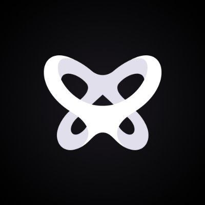

Copyright @darshanborah007.github.io ( discord- syrusop8982)
Onomy Protocol Introducing Onomy Protocol — Powering a Decentralized Exchange (DEX) to Support Forex & Traditional Assets Onomy Protocol’s mission is to power a multi-chain DEX that bridges traditional and decentralized finance. This mission is achieved by supporting the foreign currency exchange marketplace (FOREX) and, over time, other traditional assets on an entirely modernized infrastructure leveraging blockchain. Decentralized exchanges (DEXs) have proven to render traditional infrastructure inferior. Users can trade 24/7, retain custody of all assets, and enjoy no central authority governing when users can and cannot trade a particular asset (See recent Gamestop $GME debacle on Robinhood). Additionally, users are enabled to earn yield from assets and positions they hold instead of the exchange or brokerage itself. Uniswap, an Ethereum-based DEX, has proven that DEXs are a force to be reckoned with. Uniswap’s 24-hour trading volume has more than doubled from September 2020 highs, when Uniswap had more volume traded than Coinbase. Uniswap has now averaged $1 billion per day in trading volume for January 2021.
The decentralized finance space (DeFi) is often tracked in terms of the total amount of value locked in all DeFi protocols, known as the Total Value Locked (TVL) metric. In February 2020, the TVL of DeFi stood at $1 billion. Just 12 months later, DeFi protocols now have a TVL of $27 billion. That is a 27x growth in only one year. So, where does Onomy Protocol fit into this growth? DeFi is currently largely dependent on Ethereum, which already has scalability issues on its own. The explosive growth of DeFi has led to Ethereum having additional congestion issues, causing slow transactions and large increases in transaction fees. The Onomy Protocol is built on Cosmos, powering the Onomy Exchange to be over 100x more efficient than Ethereum and the current leading DEXs, including Uniswap, while carrying cross-chain benefits that Uniswap lacks. Initial compatible chains will be Ethereum and Cardano. We look to build upon what Uniswap and other DEXs have accomplished by expanding reach into traditional markets, beginning with FOREX. As a comparison, cryptocurrency daily traded volume is $161 Billion at the time of this writing. The FOREX market of fiat currencies trades an astounding $6.6 Trillion in daily volume. As the gap closes further, crypto’s exponential rise will continue in conjunction with the rise of DEXs. Onomy aims to introduce the DEX-approach for FOREX trades, leveraging pegged stablecoins as representations of fiat currencies to be used and traded. The stablecoins are collateralized with Onomy’s protocol token, NOM. This structure empowers NOM holders to issue and trade traditional currencies on modernized cross-border railways with instantaneous settlement. In addition to collateral, NOM is Onomy’s governance token. NOM holders can vote on proposals in the Onomy Decentralized Autonomous Organization (DAO). As Onomy proceeds through launch and development, the Onomy core team’s responsibilities will shift entirely to the Onomy DAO for Onomy’s ongoing management. Onomy’s validators can influence protocol changes with votes weighted in proportion to the amount of NOM they hold. NOM is provided to validators through block rewards in exchange for staking to participate in network consensus. We are very excited to bring a superior infrastructure to traditional markets. In the coming articles, we will discuss Onomy’s Bonding Curve Offering to purchase NOM, our testnet, development roadmap, and more!
